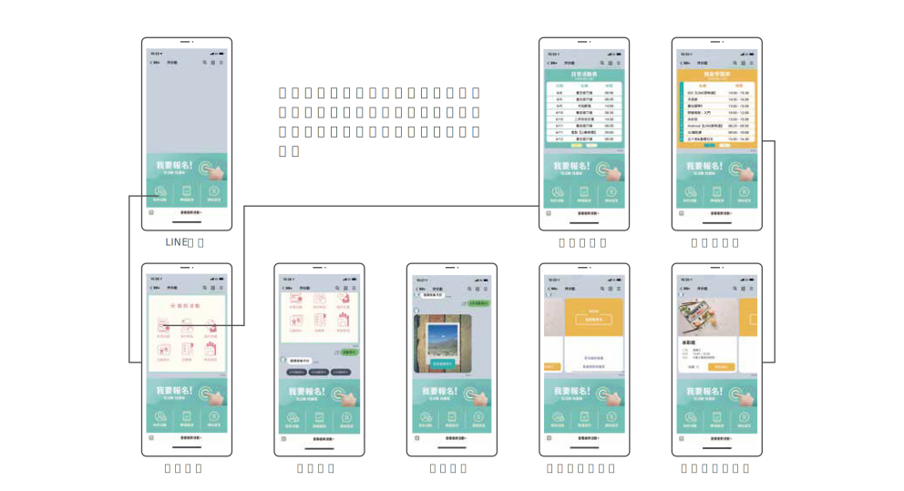
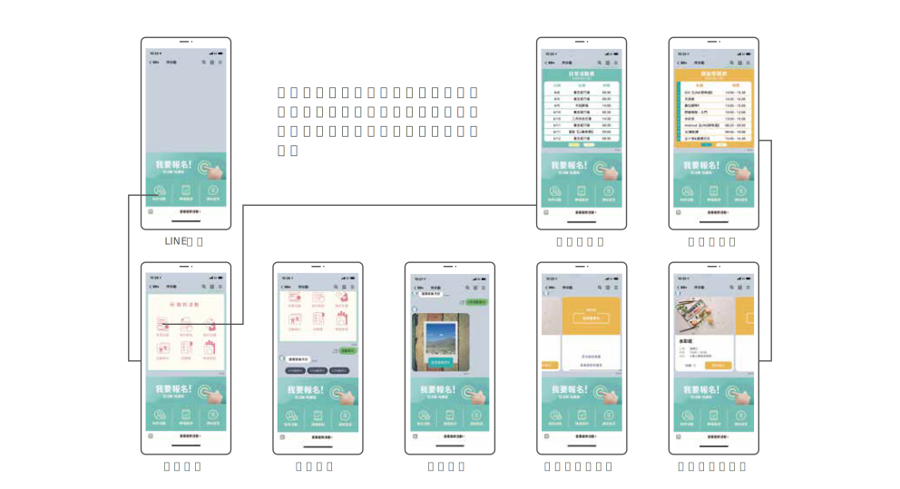

contact
Web design UX/UI Research & Design | 2022
做伙動, learning platform established for Chang Gung Health Culture Village which won the Symbol of National Quality mark in 2021. According to information, Activity Participation helps Seniors Stay Healthy. We hope to use this platform to increase activity participation and strong the physical and mental abilities of the senior citizens. And also reduce the burden of health carer, and provide health data tracking. After the proof of time, if it's work, it may be used in the society and provide the national senior citizens learning registration, indirectly make them strong, and reduce the disease pain.
My role
Competitive Analysis, User interview, Research, UI/UX Design (Linebot/Web), Promotional Video
Duration
September 2021 to May 2022 (9 months)
Teams
Designers (1), Design Professor (3), Engineer team (**), Cooperated Field (2)
I categorizes users into villagers who participate in activities and health-carer who plan activities. The average age of the villagers is 70+, and the past platform lacks "sorting" feature and the activity information is fragmented. They are also not good at network. It leads to bad user experience such as registration and searching difficulties. However, the health-carer needs to manage and plan activities. In the past, the whole data records on paper, which made it difficult to manage activities. Therefore, it's a burden to make health-carer analyze what new activities should be held or optimized difficultly.
I’d like to create something that can solve user problem. It comes down to the following three aspects:
The 3 Design Highlights You Should Know
Design Highlight
Through empathize users, we understand that the seniors are not good at using the Internet, and it is difficult for them to search. Therefore, we have designed Personalized Activity Recommendations and analyzed the users' past activity records to provide the most suitable activities and interested activities. It can meet the needs of users and meet the design goal, promote the activity participation rate.


Information list for basis of recommend
Design Highlight
We found that most platforms use web pages for basic functional operations, we also found that they use the group function in the LINE APP for message communication, so I searched and found that: 60% of the seniors(over 55) have a smartphone, and more than 90% of them use the LINE APP. By asking the staff of the health care village, we learned that more than 70% of the seniors in the village have a smartphone, and nearly 100% of them use the LINE APP , and the villagers are more familiar with mobile phones than the other seniors.

Design Highlight
In the past, paper were used to record activities, which often made it difficult to review. Therefore, we created several functions and made them online through empathy users. These records can give health carers more basis for planning activities.

E-portfolio

Feedback form

Scan sign-in
know more
↓User Interview
This is a whole-new project. We must understand the working mode of the health village, current conditions, and internal administrative knowledge in order to plan effectively. Therefore, we decided to conduct user interviews, and the target is the staff of the activity department of the health village, so that we can collect a large of basic knowledge at the minimum cost.

something recorded

key questions
Competitive Analysis
We will collect the activity platform of the nursing home (the exact same competitor) and the general silver-haired activity platform (secondary competitor) to compare the features, UI hierarchy, and the platform used. In addition to understanding the industry standard, it can also become nutrients of new design.

Secondary Competitor

Main Competitor
User Journey Map
According to the results of user interviews and team meetings, it was decided to make 3 types of Personas. There are 2 main types, which are divided into more opened villagers who often participate in activities, and more introverted villagers who 'don't often participate in activities. There is 1 secondary types, which is the staff of the activity department. Then, Let's Start the User Journey Map

【1】 Persona (Main)
User Journey Map by 【1】 persona

【2】 Persona (Main)

User Journey Map by 【2】 persona

【3】 Persona(Secondary)
User Journey Map by 【3】 persona

Users don't like fragmented messages
Users desire to record and be reminded
With all of Find-outs above, we run a design sprint. After that, we pinned down the design goals in the session:
know more
↓Priority
After meeting with stakeholders in the early stage, we decided to use LINE and Website as the development platforms, so when I drawing the functional map, I have already considered the limitations of LINE:
Front-stage Functional Map

Back-stage Functional Map
In order to save time and money, we will list the features and prioritize to know how degree that the APMIC (our development team) background can achieve currently:

All functions and purpose what I list
Wireframes
I start from Information Architecture to look at the big picture. After that, it's time to start planning how users will use the platform:

Linebot Wireframes


Website Wireframes
Due to some internal issues, after reading the first version of Wireframe, stakeholders decided to overturn the previous development priorities.
know more
↓Redesign
After meeting with stakeholders, I learned the following 2 questions:

I reunderstand the resources at hand, LINE OA Line Official Account Can carry out brand marketing, functions with dialogue robots, designated group messages, CRM , and I conducted the competitor analysis again and discussed the results with the engineering team. Final, I got a positive answer.

I reunderstanding the user needs, stakeholders' questions, and I re-planned the overall flow, Here's some points:

We designed the UI of the front-stage, and the main users are those villagers. Therefore, I have studied the design specifications of the APP for the seniors, meeting with staff of health village to build dialogue scripts, and following with the Find-Outs above, I have come to the conclusions, Here's the following main points:

My first step is to set the brand color first, because it is an activity platform, I hope to have a sense of vitality, and then refer to the above main points to complete the UI design specifications, and finally we complete, Let's check it out!
 

Iteration
LINE still has limitations, and some functions cannot be used like web pages. In the next generation, we will add web page function development and redesign the journey of users. Because of time, I cant't participate in the next iteration, so I make a HAPPY BOOK to record the design journey, and Here's the book:
Unlike designing a function of product, I need to understand the entire product journey, the health village, the seniors, the stakeholders, and even myself. That is to say, it's my graduation project and a business project at the same time. I have to make unique ideas on the premise of actual launch. Therefore, it can't be avoid that interesting ideas will be threw. My goal is to find a balance between uniqueness and consistency.
In the past, I completed school projects by myself or in cooperation with classmates that as a designer. This time, I cooperated with a complete team. Unlike before, there are many constraints on cooperative design, such as: the brand concept of the customer, the persistence of stakeholders, the engineering team's limit. It takes a lot of time and effort to understand their requirements and reach alignment. There were also emergencies in the development, the product was redesigned, and it was a thrilling but perfect ending experience.